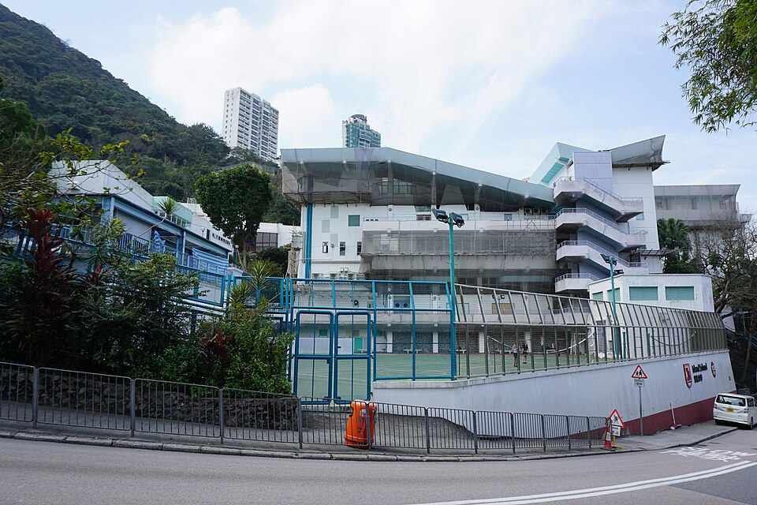

아일랜드 스쿨 보렛로드 캠퍼스 · 사진: Exploringlife / Wikimedia Commons, CC BY-SA 4.0
아일랜드 스쿨(Island School, 홍콩 ESF) — 초등이 없는 학교, 그래서 자리가 먼저입니다
⚠️ 이름 혼동 주의 — 홍콩에는 "아일랜드"가 들어가는 ESF 학교가 여럿입니다. 아일랜드 스쿨(이 글, 미드레벨 보렛로드) · 사우스 아일랜드 스쿨 · 웨스트 아일랜드 스쿨은 서로 다른 학교입니다. 한국어 후기에서 자주 섞이니, 글을 읽기 전에 주소부터 확인하세요. 또 ESF는 학교 이름이 아니라 재단 이름입니다 — 자세한 설명은 디스커버리 칼리지(ESF 계열) 글에 정리해 두었습니다.
1. 어떤 학교인가
아일랜드 스쿨은 1967년에 문을 연 것으로 알려진 ESF의 창립 학교 중 하나입니다. 처음에는 보렛로드의 옛 영국군 병원 건물에서 시작한 것으로 전해지고, 이후 같은 자리인 미드레벨 보렛로드 20번지에 자리 잡았습니다. 받는 학년은 Year 7부터 Year 13까지, 나이로는 만 11세에서 18세 무렵입니다.
교육과정은 세 구간으로 나뉘는 구조로 안내됩니다.
· Year 7~9 — IB MYP(중등 과정)
· Year 10~11 — GCSE·IGCSE, 일부 BTEC 과목
· Year 12~13 — IB 디플로마(DP) 또는 IB 커리어 관련 프로그램(CP), BTEC 과목 포함
캠퍼스에 대해서도 한 가지 알아 두실 것이 있습니다. 보렛로드 캠퍼스는 2017년 말 재건축을 위해 비웠고, 학생들은 샤틴 지역 임시 캠퍼스에서 몇 해를 보냈습니다. 그리고 2022년에 새로 지은 보렛로드 캠퍼스로 돌아온 것으로 소개됩니다. 그래서 2018~2021년 사이에 쓰인 한국어 후기를 읽으시면 주소도 시설도 지금과 다릅니다. 검색 결과를 보실 때 작성 연도부터 확인하세요.
※ 학생 수·학비·연도별 시험 결과처럼 해마다 달라지는 수치는 이 글에 적지 않았습니다. 모집 학년과 조건도 해마다 바뀌니 학교 입학처에 직접 확인하세요.
2. 이 글의 핵심 — 입학의 시작점이 Year 7 하나뿐입니다
초등 과정이 없다는 말은 단순히 "어린아이는 못 간다"가 아닙니다. 자리가 채워지는 방식 자체가 다르다는 뜻입니다.
ESF 안내에 따르면 ESF 초등학교에 다니는 학생은 ESF 중등학교로 올라가는 자리가 보장되는 것으로 소개됩니다. 즉 Year 7 자리의 상당 부분은 이미 ESF 안에서 올라오는 학생들로 채워진 상태에서, 외부 지원자가 남은 자리를 두고 절차를 밟게 됩니다. 외부 지원은 정해진 중앙 지원 기간에 접수하고, 우선순위 범주(형제자매 재학 여부, 기업·재단 지명 등)와 함께 처리되는 것으로 안내됩니다.
| 우리 집 상황 | 먼저 해야 할 일 |
|---|---|
| 아이가 아직 초등학생 | ESF 초등학교 쪽을 먼저 봅니다. 중등은 그 뒤에 이어지는 문제입니다 |
| 아이가 Year 7 진입 시기 | 중앙 지원 기간을 놓치지 않는 것이 가장 중요합니다 |
| 학년 중간(Year 8~11) 편입 | 결원이 생겨야 가능합니다. 입학처에 대기 상황을 직접 문의 |
| 형제가 이미 ESF 재학 | 형제자매가 우선순위 범주에 포함되는 것으로 안내됩니다 — 확인하세요 |
| 발령 시기가 애매함 | 지원 기간이 학기 시작보다 훨씬 앞입니다. 발령 전에 문의해 두세요 |
주재원 가정이 가장 많이 손해 보는 지점이 마지막 줄입니다. 발령 통보가 늦게 오는데 지원 기간은 이미 지나 있습니다. 발령이 확정되지 않았더라도 문의와 서류 준비는 미리 할 수 있습니다. 지원 시기·우선순위 범주·구비 서류는 해마다 바뀌니 ESF와 학교 입학처의 그해 안내를 반드시 직접 확인하세요.
3. 한국(주재원) 학생이 겪는 어려움 — 규칙이 두 번 바뀝니다
이 학교에 들어가면 아이는 7년 동안 평가 규칙을 두 번 갈아탑니다. 각 구간에서 막히는 지점이 다릅니다.
| 구간 | 평가 방식 | 한국 학생이 막히는 곳 |
|---|---|---|
| Year 7~9 (MYP) | 기준표(criteria)로 채점 | 답은 맞는데 근거 설명이 없어 점수가 깎입니다 |
| Year 10~11 (IGCSE) | 2년 코스 + 외부 시험 | 중간 합류가 가장 어렵습니다 — 코스가 이미 절반 진행 |
| Year 12~13 (DP·CP) | 과제와 시험이 2년 내내 동시에 | 시간 관리와 과목 조합에서 무너집니다 |
표의 가운데 줄이 주재원 가정에 가장 중요합니다. Year 10 전후(한국 중2~중3 무렵)의 편입이 가장 위험합니다. IGCSE는 2년에 걸친 코스라 중간에 들어가면 이미 진행된 범위를 혼자 메워야 합니다. 발령 시기를 조정할 수 있다면 Year 9 이전이나 Year 11 이후가 훨씬 수월합니다. 편입 전반은 편입·전학 총정리에 정리해 두었습니다.
4. 마지막 2년이 세 갈래 — 고르는 기준은 난이도가 아닙니다
아일랜드 스쿨은 Year 12·13에서 IB 디플로마뿐 아니라 IB 커리어 관련 프로그램(CP)과 BTEC 과목을 함께 운영하는 것으로 안내됩니다. 선택이 여럿이면 좋아 보이지만, 실제로는 Year 11에 결정을 내려야 하는 부담이 생깁니다.
고르는 기준은 "어느 쪽이 쉬운가"가 아니라 "어느 쪽이 우리 아이의 공부 방식과 맞는가"입니다.
· IB 디플로마 — 여섯 과목을 균형 있게 끌고 가고, 마지막에 외부 시험 비중이 큽니다. 시험에서 힘을 내는 아이에게 맞습니다. → IB DP 점수 완전정복
· CP·BTEC — 2년 내내 과제와 단위를 쌓아 가는 방식입니다. "덜 하는 길"이 아니라 다르게 채우는 길입니다. 꾸준히 제출하는 아이에게 맞습니다.
⚠️ 한 가지는 꼭 확인하셔야 합니다. CP·BTEC 이수자의 대학 지원 자격 인정 범위는 나라와 대학마다 다릅니다. 한국·일본·영국·미국 중 어디를 염두에 두셨는지에 따라 답이 달라지므로, Year 11 중에 진학 담당 선생님과 함께 해당 대학 요강을 확인하시기 바랍니다.
5. 그래서 이렇게 준비합니다 — 그리고 홍콩이라는 조건
· ① Year 7 진입 전 1년에 영어 글쓰기를 손봅니다. MYP 기준표는 근거를 들어 설명하는 문단을 요구합니다. 회화가 아니라 쓰기입니다.
· ② Year 9 말에 IGCSE 과목 조합을 상의합니다. 여기서 정한 과목이 Year 12 선택지를 좁힙니다. → IGCSE 과목 선택 가이드
· ③ 수학은 풀이 과정을 영어로 쓰는 연습을 합니다. 답만 적으면 점수가 나오지 않습니다.
· ④ Year 11에 마지막 2년 경로를 결정합니다. 준비는 Year 10부터입니다.
· ⑤ 통학을 먼저 계산하세요. 미드레벨은 홍콩섬 중심부라 거주지에 따라 통학 부담이 크게 갈립니다. → 통학·스쿨버스
📌 홍콩은 한국과 시차가 1시간입니다. 한국 저녁 9시가 홍콩 저녁 8시라, 화상 수업을 평일 저녁에 잡기가 가장 쉬운 도시 중 하나입니다. 활동이 많은 학기에는 그 과목 수업 전날 저녁에 한 번 붙이는 방식이 효율이 좋습니다.
홍콩 안의 다른 선택지와 견주어 보실 분들을 위해 덧붙이면, HKIS(미국식 AP)·CIS·CDNIS·디스커버리 칼리지·해로 홍콩·YCIS 글이 각각 다른 축으로 정리돼 있습니다. 홍콩 전체 그림은 홍콩 국제학교 과외 안내에서 보실 수 있습니다.
관련 검색어: 홍콩아일랜드스쿨 · 아일랜드스쿨수학과외 · 아일랜드스쿨영어과외 · 홍콩국제학교수학과외 · ESF아일랜드스쿨
정리
아일랜드 스쿨은 1967년 개교로 알려진 ESF 창립 학교이고, Year 7에서 시작하는 중등 전용 구조입니다. 초등 과정이 없어서 자리의 상당 부분이 ESF 초등에서 올라오는 학생으로 채워지고, 외부 지원 가정에게는 지원 시기가 거의 전부입니다. 아이 쪽에서는 Year 10 전후 편입이 가장 위험하고(IGCSE 2년 코스 중간 합류), Year 11의 경로 선택(디플로마·CP·BTEC)이 진학 범위를 정합니다. 지금 아이가 어느 구간에 있는지에 따라 할 일이 전혀 다르니, 30분 무료 수업으로 현재 위치부터 확인해 보시기 바랍니다. (학년 구성·지원 절차·과정 운영은 바뀔 수 있으니 반드시 학교 요강을 직접 확인하세요.)